核心原理 · 网格导出
.lm，按以下顺序处理——
① 枚举顶点属性并构建布局 → ② 左手系到右手系的坐标转换 → ③ 按材质划分子网格索引区间。静态网格至此完成；蒙皮网格额外处理
④ 24 骨骼分组与跨堆顶点复制、⑤ bindpose 的等价变换。⑥ 为可选的网格简化。
首先枚举网格的顶点属性，据此构建顶点声明（vbDeclaration）并累加每顶点字节数。除位置外，顶点可含法线、UV、颜色，蒙皮网格另含骨骼权重与索引。
下面是实测的 Ellen_Body 网格——
18727 顶点、30320 三角形、1 子网格、85 骨骼：
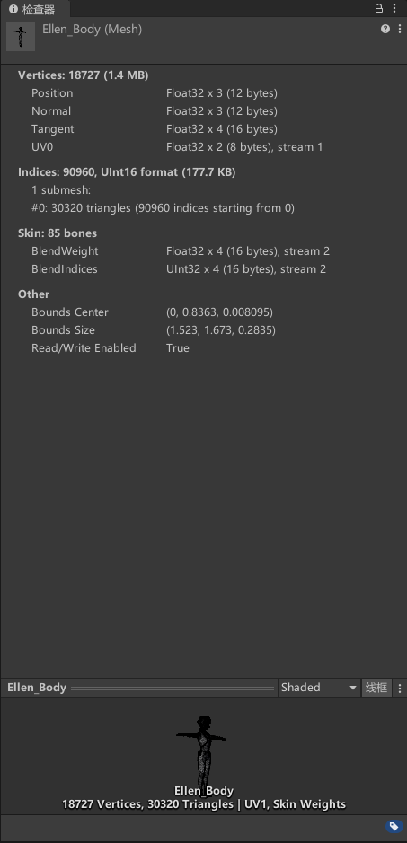
| 顶点流 | vbDeclaration | 字节 | 受控开关（模型设置） |
|---|---|---|---|
| 位置 | POSITION | 12 | 必有 |
| 法线 | NORMAL | 12 | 忽略顶点法线 可剥离 |
| 颜色 | COLOR | 16 | 忽略顶点颜色 可剥离 |
| UV | UV | 8 | 忽略顶点 UV 可剥离 |
| UV1 | UV1 | 8 | 光照贴图 UV（可自动生成） |
| 骨骼权重 + 索引 | BLENDWEIGHT,BLENDINDICES | 16 + 4 | 仅蒙皮网格；权重 Float32×4(16B)，索引导出后压成 Uint8×4(4B) |
| 切线 | TANGENT | 16 | 忽略顶点切线 可剥离 |
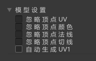
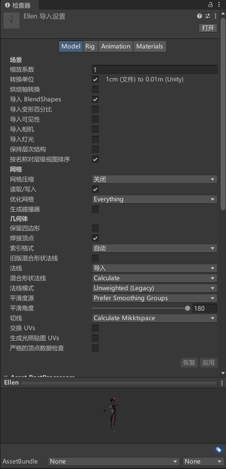
.lm 是分区二进制（版本 → 内容信息 → 段落 → 字符 → 网格 → 子网格 → 字符数据 → VB → IB），
采用「先占位、记偏移、最后倒推回填」的写法。索引格式：顶点数 > 65535 且为 UInt32 时用 32 位，否则 16 位（Ellen_Body 为 UInt16）。
顶点数据就绪后，先处理坐标系差异。Unity 为左手系、LayaAir 为右手系，二者呈 X 轴镜像，空间数据需相应取反。各类数据处理如下：
| 数据 | 处理 |
|---|---|
| 位置 / 法线 / 切线 | X 分量取反（-vertice.x / -normal.x / -tangent.x） |
| UV | V 翻转：uv.y × -1 + 1（Unity 纹理 V 向上，Laya 向下） |
| 包围盒 | -max.x, min.y, min.z, -min.x, max.y, max.z（X 取反并交换 min/max） |
网格按材质槽划分为多个子网格（SubMesh），每个子网格在索引缓冲中占一段区间。区间记录起点 ibStart 与长度 ibLength（来自 mesh.GetIndices(i)）。
静态网格按原始顺序写出；蒙皮网格的区间在骨骼分组后重算。
Ellen_Body 只有 1 个子网格，所以是单段区间（单子网格时 ibStart=0、ibLength=全部索引）。
一个模型挂多个材质时会有多个子网格 → 多段区间，每段对应一个材质槽，运行时按区间分材质绘制。
以下两节为蒙皮网格专属。LayaAir 单次 drawcall 的骨骼矩阵上限为 24 根（uniform 限制），而角色骨骼常达上百根。
因此当子网格引用的骨骼超过 24 根时，需将其三角形拆分为多个骨骼数 ≤24 的分组、分批渲染。Ellen_Body 引用 85 根，需进行分组：
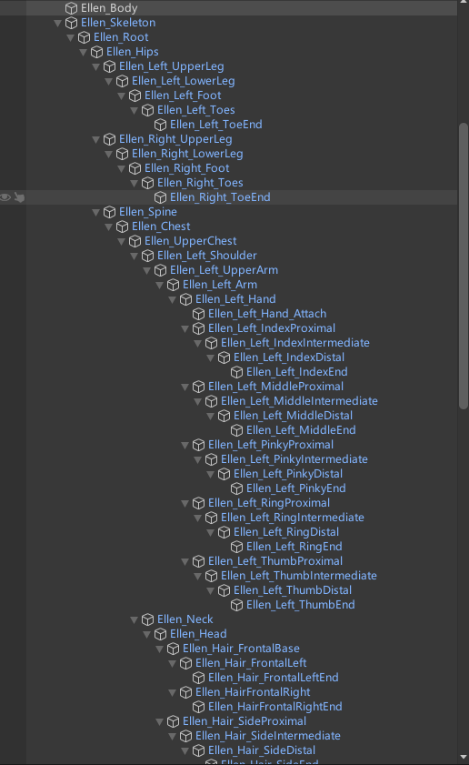
Ellen_Root 展开是上百根骨骼节点（手指、脸部、头发都独立成骨），Ellen_Body 引用其中 85 根。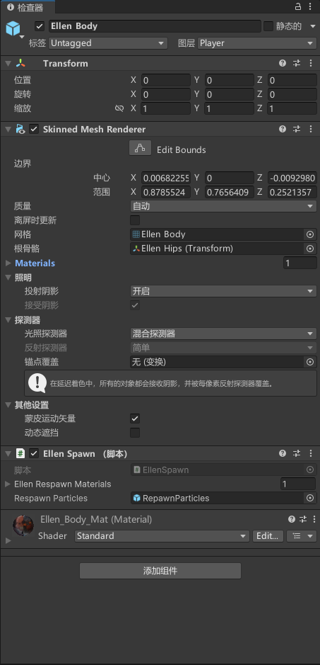
bones 列表（85 根）、根骨骼（Ellen Hips）与 sharedMesh，再做下面的分组。分组算法（MaxBoneCount = 24）：
triangleBoneIndex）。checkPoint 用 commonPoint 字典去重）。这就是导出后顶点数可能多于 Unity 原始数的原因。changeBoneIndex）；每个堆再写一张「局部 → 全局」骨骼映射表 boneDic，供运行时还原。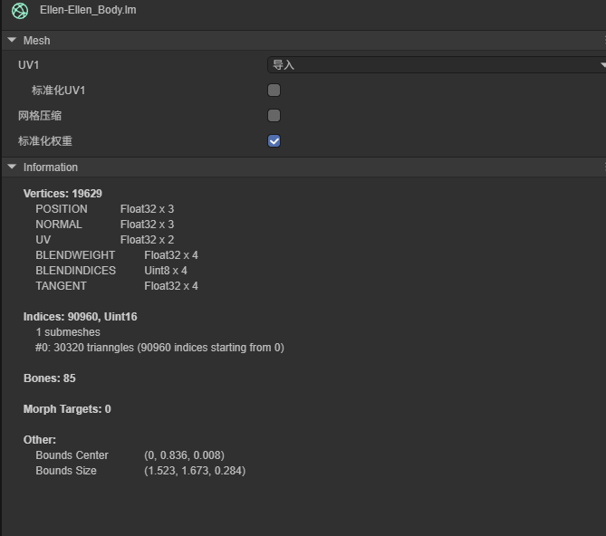
.lm（在 LayaAir 中查看）：顶点数 19629（> Unity 的 18727）、85 骨骼、Uint16 索引；BLENDINDICES 已从 UInt32 压成 Uint8 × 4（对应代码里的 (byte)boneIndex）。
普通 MeshRenderer 走 writeMesh，没有骨骼、不分组、不复制顶点；只有蒙皮网格才有上面那套。
拿一块 ProBuilder 地块 pb_Mesh 和 Ellen 对比，一眼看清：
| 对比项 | 静态 · pb_Mesh（地块） | 蒙皮 · Ellen_Body |
|---|---|---|
| 导出方法 | writeMesh | writeSkinnerMesh |
| 骨骼数 | 0 | 85 |
| 导出前顶点 | 729 | 18727 |
| 导出后顶点 | 729（不变） | 19629（+902） |
| 顶点复制 | 无 | 有（24 骨骼分组所致） |
| 子网格 | 1 | 1 |
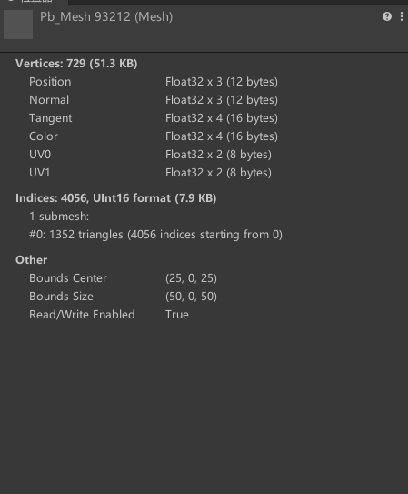
pb_Mesh，729 顶点、无骨骼，包围盒中心 (25,0,25)。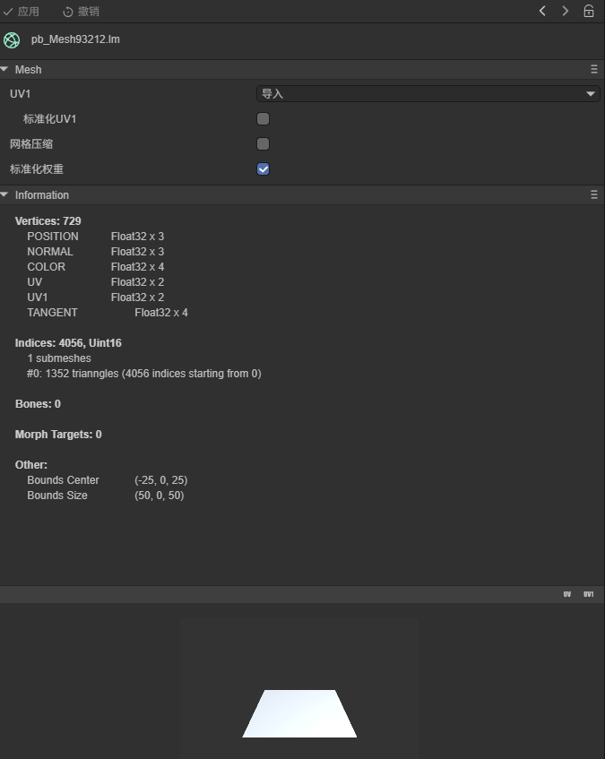
Bones: 0；包围盒中心变 (-25,0,25)——X 已取反，实证坐标翻转。bindpose（绑定姿势矩阵）记录蒙皮时骨骼相对网格的初始变换，同属空间数据，需在坐标系转换下做等价变换。因对象是矩阵，处理步骤较 ② 更多：
position.x 与 quaternion 的 x、w 取反的原因：Unity 采用左手系、LayaAir 采用右手系，二者差异等价于将整个空间沿 X 轴镜像一次。
镜像下，平移只需把 position.x 取反（其余分量不变）；而旋转在左右手系之间不是简单镜像——同一个物理转动，换手系后等价于对四元数的 x 与 w 分量取反（y、z 保持不变），才能表示「翻转后看起来一样」的那次旋转。
所以这里不是随手抄的公式，而是「让翻转前后骨骼朝向保持一致」的等价变换；缩放不含手性、无需处理。先取逆是为了把 bindpose 还原成正向的骨骼变换、翻转完再取逆装回 inverseGlobalBindPoses。
可选步骤：顶点数过多时对网格做减面简化。普通网格导出默认不简化，该机制主要用于粒子网格顶点超限时的兜底。提供两种策略：
| 策略 | 说明 |
|---|---|
| QEM（优先）高质量 | 调 UnityMeshSimplifier 库的二次误差度量算法（需另装 UnityMeshSimplifier 包并开启 UNITY_MESH_SIMPLIFIER 编译宏，MeshSimplifier.cs），保形好 |
| 抽取三角形（兜底） | SimplifyByVertexSampling——库不可用时退化为抽取三角形，质量较低 |
ENABLE_PARTICLE_MESH_OPTIMIZATION 宏）。
普通网格导出默认不简化。
ENABLE_PARTICLE_MESH_OPTIMIZATION 控制（默认未启用，故导出面板上不显示该开关）——
在项目脚本编译符号（Scripting Define Symbols）里加上它即可启用。高质量 QEM 则另由 UNITY_MESH_SIMPLIFIER 控制：需再加该宏并安装 UnityMeshSimplifier 包，否则简化退化为采样兜底（见上表）。
同一个 Ellen 模型，导出前后并排对比——网格形状一致，证明顶点 / 三角形 / 骨骼绑定正确还原：
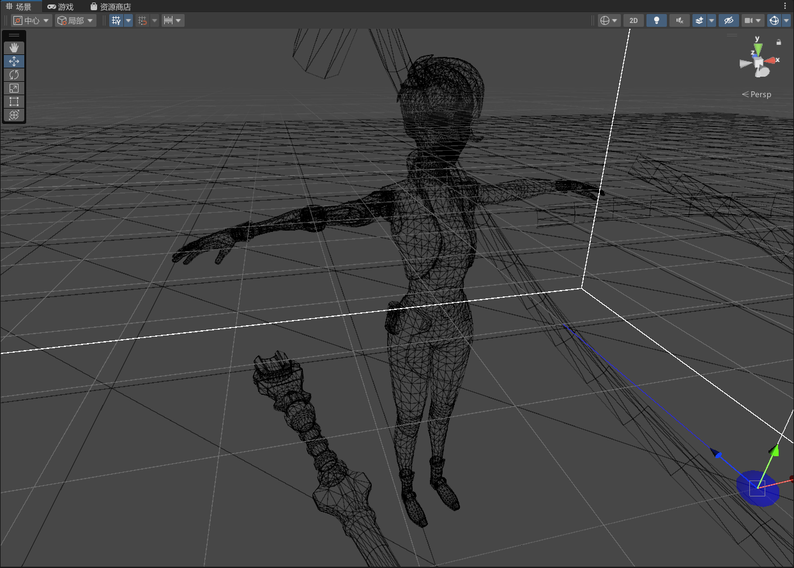
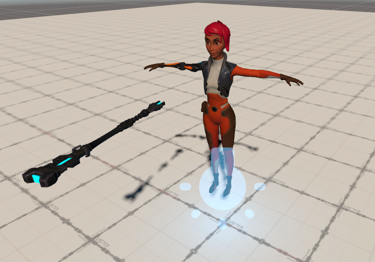
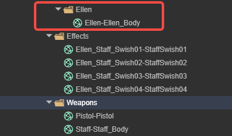
.lm：导出目录 Models/ 下，每个网格一个文件——如 Ellen-Ellen_Body、Staff-Staff_Body。